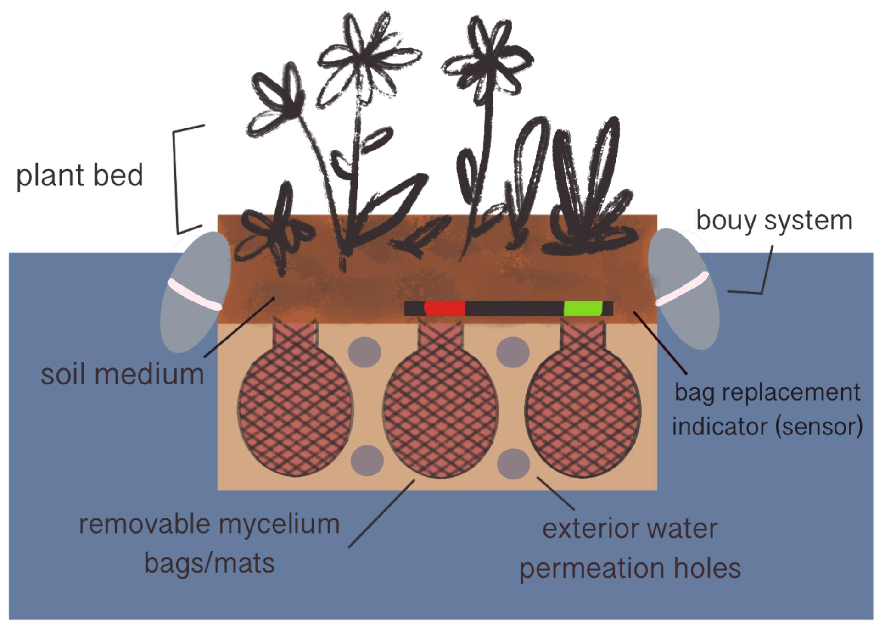

Our Products
Mycelium is the fiber of the mushroom body, with a special capability to absorb oils, heavy metals, excess nitrates, phosphates, and other waste contaminants in water and sequester them within their tissue. Fungal hyphae, structures within the mycelium system, have a diameter of 4-6 micrometers and actively work to filter out contaminants. Introducing layered mycelium mats to bodies of water impacted by the previously mentioned pollutants will decrease the concentration of particulate matter in the water in which they are placed. These mats are easily transportable and could be applied to local water ways to improve water quality and consequently environmental health.
Design of the platform would entail two stories; the first story would be slightly below the water’s surface and would house mycelium pods. These pods would have a removable design that would allow for the mycelium to be pulled from the water and replaced with new pods if water testing indicates that their absorption capacity has been reached. Testing would need to be performed on the removed pods to determine if the tissue contains mostly nutrients (like nitrogen and phosphorus), or heavy metals. If the former is found, the pods could be left to start the decomposition process and used as an alternative to store bought fertilizer. This option would allow the user to repurpose the nutrients collected in a manner that would be beneficial to the local habitat or their farmland. If heavy metals are found, the pods would have to be disposed of in a manner that complies with the regulation for disposal of the heavy metal in question. Above the layer of mycelium pods, lies a mat of native plants feeding off any decaying matter from the mycelium, encouraging the development of a holistic ecosystem and improving the product’s aesthetic appeal.